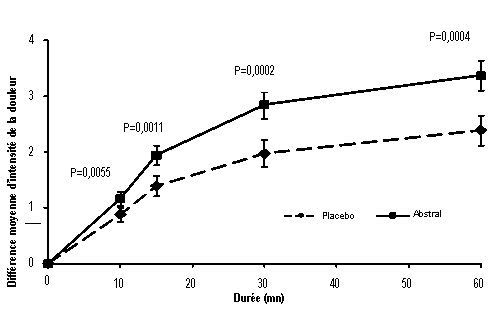

RÉSUMÉ DES CARACTÉRISTIQUES DU PRODUIT
ANSM - Mis à jour le : 09/12/2014
ABSTRAL 100 microgrammes, comprimé sublingual
2. COMPOSITION QUALITATIVE ET QUANTITATIVE
pour un comprimé sublingual
Pour la liste complète des excipients, voir rubrique 6.1.
Comprimé blanc rond.
4.1. Indications thérapeutiques
4.2. Posologie et mode d'administration
Mode d’administration
Les comprimés sublinguaux d’ABSTRAL doivent être placés directement sous la langue, le plus loin possible. Les comprimés sublinguaux d’ABSTRAL ne doivent pas être avalés, mais fondre complètement sous la langue, sans être mâchés ni sucés. Les patients doivent être informés qu’ils ne doivent pas manger ni boire avant dissolution complète du comprimé sublingual.
Les patients souffrant de sècheresse buccale peuvent utiliser de l’eau pour humidifier la muqueuse buccale avant la prise d’ABSTRAL.
Titration de la dose :
L’objectif de la titration de la dose est d’identifier une dose d’entretien optimale pour le traitement des accès douloureux paroxystiques. Cette dose optimale doit permettre une analgésie adéquate avec un taux acceptable d’effets indésirables.
La dose optimale d’ABSTRAL doit être déterminée pour chaque patient par titration progressive. Plusieurs dosages sont disponibles et peuvent être utilisés pendant la phase de titration. La dose initiale d’ABSTRAL utilisée doit être de 100 µg, avec augmentation de la posologie si nécessaire, dans la gamme des dosages disponibles.
Les patients doivent être surveillés attentivement jusqu’à ce qu’une dose optimale ait été atteinte. La substitution d’ABSTRAL à d’autres produits contenant du fentanyl ne doit pas être effectuée dans un rapport de 1/1 dans la mesure où les différents produits ont des profils d’absorption différents. Tout remplacement d’un autre produit contenant du fentanyl par ABSTRAL doit donner lieu à une nouvelle titration.
Le schéma posologique suivant est recommandé pour la titration. Le médecin doit toutefois toujours prendre en compte les besoins cliniques du patient, son âge et ses maladies concomitantes.
Tous les patients doivent initier le traitement par un seul comprimé sublingual de 100 µg.
Si une analgésie adéquate n’est pas obtenue dans les 15 à 30 minutes suivant l’administration du comprimé sublingual :
· un comprimé sublingual supplémentaire de 100 µg peut être administré ;
· pour le traitement du prochain accès douloureux paroxystique il faudra envisager d’administrer le dosage supérieur (voir Figure ci-dessous).
L’augmentation posologique doit se poursuivre par étape jusqu’à obtention d’une analgésie adéquate avec des effets indésirables tolérables. Pour des doses initiales de 400 µg et plus, le dosage du comprimé sublingual supplémentaire doit être de 200 µg. Cela est illustré par le tableau ci-dessous.
Pendant la phase de titration, le patient ne peut pas recevoir plus de deux prises pour un seul accès douloureux paroxystique.
PROCEDE DE TITRATION D’ABSTRAL
|
Dosage (en µg) du premier comprimé sublingual par accès douloureux paroxystique |
Dosage (en µg) du second comprimé sublingual, à administrer au besoin 15 à 30 minutes après le premier comprimé |
|
100 |
100 |
|
200 |
100 |
|
300 |
100 |
|
400 |
200 |
|
600 |
200 |
|
800 |
- |
Si la plus forte dose permettant d’obtenir une analgésie efficace provoque des effets indésirables considérés comme inacceptables, une dose intermédiaire peut être administrée (en utilisant selon le cas le comprimé de 100 µg).
Pendant la phase de titration, les patients doivent être informés de la possibilité d’utiliser plusieurs comprimés de 100 µg et/ou de 200 µg comme dose unique. Le nombre de comprimés administrés pour le traitement d’un seul accès douloureux paroxystique ne doit pas être supérieur à quatre (4).
L’efficacité et la sécurité de doses supérieures à 800 µg n’ont pas été évaluées au cours des études cliniques menées chez des patients.
Afin de minimiser le risque d’effet indésirable lié aux morphiniques et de déterminer la dose appropriée, les patients doivent être placés sous surveillance médicale stricte pendant le processus de titration.
Pendant la phase de titration, les patients doivent attendre au moins 2 heures avant de traiter un autre accès de douleur paroxystique avec ABSTRAL.
Traitement d’entretien :
Lorsque la dose appropriée, qui peut être supérieure à un comprimé, a été déterminée, elle doit continuer à être utilisée. La consommation doit être limitée à quatre doses d‘ABSTRAL par jour.
Pendant la période d’entretien, les patients doivent attendre au moins 2 heures avant de traiter un autre accès de douleur paroxystique avec ABSTRAL.
Réajustement de la dose :
En cas d’observation d’une modification marquée de la réponse (analgésie ou effets indésirables), une nouvelle adaptation de la dose peut être nécessaire pour assurer le maintien d’une dose optimale.
Si le patient présente plus de quatre accès douloureux paroxystiques par jour pendant plus de quatre jours consécutifs, la dose du morphinique à longue durée d’action utilisée pour traiter la douleur chronique doit être réévaluée. En cas de modification de ce morphinique ou de sa posologie, la dose d‘ABSTRAL doit être réévaluée et éventuellement réadaptée pour garantir l’utilisation d’une dose optimale.
Toute nouvelle adaptation de la dose d’un analgésique, quel qu’il soit, doit être impérativement effectuée sous surveillance médicale.
Arrêt du traitement :
Lorsque le traitement par morphinique n’est plus nécessaire, la dose d‘ABSTRAL doit être prise en compte avant toute réduction progressive des morphiniques, afin de minimiser l’éventuel syndrome de sevrage.
Chez les patients poursuivant le traitement morphinique de la douleur chronique chez qui le traitement des accès douloureux paroxystiques n’est plus nécessaire, ABSTRAL peut généralement être arrêté immédiatement.
Utilisation chez l’enfant et l’adolescent :
Compte-tenu de l’absence de données de sécurité et d’efficacité pour cette population, ABSTRAL ne doit pas être utilisé chez les patients de moins de 18 ans.
Utilisation chez le sujet âgé :
La titration de la dose doit être particulièrement prudente et l’apparition éventuelle de signes de toxicité du fentanyl doit faire l’objet d’une surveillance stricte (voir rubrique 4.4).
Utilisation chez les patients insuffisants hépatiques ou rénaux :
L’apparition éventuelle de signes de toxicité du fentanyl doit faire l’objet d’une surveillance stricte chez les patients atteints de troubles hépatiques ou rénaux (voir rubrique 4.4).
· Hypersensibilité à la substance active ou à l’un des excipients mentionnés à la rubrique 6.1.
· Patients non traités par un traitement de fond morphinique, en raison d’un risque accru de dépression respiratoire.
· Dépression respiratoire sévère ou pathologies pulmonaires obstructives sévères.
· Traitement de la douleur aiguë autre que les accès douloureux paroxystiques.
4.4. Mises en garde spéciales et précautions d'emploi
En raison des effets indésirables potentiellement graves des traitements morphiniques comme ABSTRAL, les patients et le personnel soignant doivent être informés de l’importance de la prise correcte d‘ABSTRAL et informés des mesures à prendre en présence de symptômes de surdosage.
Avant l’instauration d‘ABSTRAL, le traitement morphinique à longue durée d’action utilisé pour contrôler la douleur chronique doit avoir été stabilisé.
ABSTRAL n’a pas été étudié chez les patients présentant des lésions buccales ou une mucite. Un risque d’augmentation de l’exposition systémique au médicament peut exister chez ces patients et une prudence particulière est donc recommandée pendant la titration.
La suspension du traitement par ABSTRAL ne devrait pas entraîner d’effet notable, mais les symptômes possibles de sevrage incluent : anxiété, tremblements, sueurs, pâleur, nausées et vomissements.
Accoutumance, dépendance
Une accoutumance et une dépendance physique et/ou psychologique sont susceptibles d’apparaître lors de l’administration répétée de morphiniques tels que le fentanyl. La toxicomanie iatrogène est rare dans le cadre de l’utilisation thérapeutique des morphiniques.
Dépression respiratoire
Comme tous les morphiniques, ABSTRAL est associé à un risque de dépression respiratoire cliniquement significative. La phase de titration doit être réalisée avec une prudence particulière chez les patients atteints de broncho-pneumopathie chronique obstructive ou d’une autre pathologie (par ex. : myasthénie grave) les prédisposant à une dépression respiratoire, en raison de la majoration du risque de dépression respiratoire pouvant entraîner un arrêt respiratoire.
Augmentation de la pression intracrânienne, troubles de la conscience
ABSTRAL ne doit être administré qu’avec une extrême prudence aux patients susceptibles de présenter une sensibilité particulière aux effets cérébraux de l’hypercapnie, comme les patients présentant des signes d’hypertension intracrânienne, des troubles de la conscience, un coma ou des tumeurs cérébrales. Les morphiniques pouvant masquer l’évolution clinique chez les patients atteints de traumatismes crâniens, ils ne doivent être utilisés dans ce cadre qu’en cas d’absolue nécessité.
Pathologie cardiaque
Le fentanyl peut provoquer une bradycardie. Il doit être utilisé avec prudence chez les patients présentant des antécédents de bradyarythmie ou une bradyarythmie préexistante.
Patients âgés
Les données obtenues à la suite de l’administration intraveineuse de fentanyl suggèrent la possibilité d’une réduction de sa clairance et d’une augmentation de sa demi-vie chez les patients âgés, qui pourraient être plus sensibles à la substance active que les patients plus jeunes. Les patients âgés, cachectiques ou affaiblis doivent faire l’objet d’une surveillance attentive en cas d’apparition de signes de toxicité du fentanyl, entraînant si nécessaire une réduction de la dose.
Insuffisance rénale ou hépatique
ABSTRAL doit être administré avec prudence chez les patients présentant des troubles hépatiques ou rénaux, en particulier pendant la phase de titration. L’utilisation d‘ABSTRAL chez des patients insuffisants hépatiques ou rénaux pourrait augmenter la biodisponibilité du fentanyl et réduire sa clairance systémique, ce qui pourrait entraîner une augmentation et une prolongation des effets morphiniques.
Une prudence particulière doit être apportée au traitement des patients hypovolémiques ou hypotendus.
Syndrome sérotoninergique
Il est conseillé de faire preuve de prudence lorsqu’ABSTRAL est administré en association avec des médicaments qui affectent les systèmes de neurotransmission sérotoninergique.
Un syndrome sérotoninergique, susceptible de mettre en jeu le pronostic vital, peut se développer lors de l'utilisation concomitante de médicaments sérotoninergiques tels que des inhibiteurs sélectifs de la recapture de la sérotonine (ISRS) et des inhibiteurs de la recapture de la sérotonine et de la noradrénaline (IRSN), ainsi qu’avec des médicaments qui altèrent le métabolisme de la sérotonine (y compris les inhibiteurs de la monoamine oxydase [IMAO]). Cela peut se produire aux doses recommandées.
Le syndrome sérotoninergique peut s’accompagner d’altérations de l'état mental (p. ex. agitation, hallucinations, coma), d’une instabilité du système nerveux autonome (p. ex. tachycardie, pression artérielle labile, hyperthermie), de troubles neuromusculaires (p. ex. hyperréflexie, incoordination, rigidité) et/ou de symptômes gastro-intestinaux (p. ex. nausées, vomissements, diarrhée).
En cas de suspicion de syndrome sérotoninergique, il convient d’arrêter le traitement par ABSTRAL.
4.5. Interactions avec d'autres médicaments et autres formes d'interactions
Le fentanyl est métabolisé par le CYP3A4. Les médicaments qui inhibent l’activité du CYP3A4 tels que les macrolides (par ex. : érythromycine), les antifongiques imidazolés (par ex. kétoconazole, itraconazole) et certains inhibiteurs de la protéase (par ex. : ritonavir) sont susceptibles d’augmenter la biodisponibilité du fentanyl en diminuant sa clairance systémique, ce qui pourrait accroître ou prolonger les effets des morphiniques. Le jus de pamplemousse est également un inhibiteur du CYP3A4. Le fentanyl doit donc être administré avec prudence lorsque des inhibiteurs du CYP3A4 sont administrés de façon concomitante.
L’administration concomitante d’autres dépresseurs du SNC tels que : autres dérivés morphiniques (analgésiques ou antitussifs), anesthésiques généraux, myorelaxants, antidépresseurs sédatifs, antihistaminiques H1 sédatifs, barbituriques, anxiolytiques (benzodiazépines), hypnotiques, neuroleptiques, clonidine et substances apparentées peuvent augmenter les effets dépresseurs du SNC. Une dépression respiratoire, une hypotension et une sédation profonde peuvent apparaître.
L’alcool potentialise les effets sédatifs des analgésiques morphiniques. L’administration concomitante de boissons alcoolisées ou de médicaments contenant de l'alcool et d‘ABSTRAL n’est donc pas recommandée.
L’utilisation d‘ABSTRAL n’est pas recommandée chez les patients ayant reçu des inhibiteurs de la monoamine-oxydase (IMAO) dans les 14 jours précédant la prise, en raison de la potentialisation sévère et imprévisible des analgésiques morphiniques par les IMAO.
L’utilisation concomitante d’agonistes-antagonistes partiels morphiniques (par ex : buprénorphine, nalbuphine, pentazocine) n’est pas recommandée. En effet, ceux-ci possèdent une forte affinité pour les récepteurs morphiniques, avec une activité intrinsèque relativement faible ; ils antagonisent donc partiellement l’effet analgésique du fentanyl et peuvent entraîner des symptômes de sevrage chez les patients morphinodépendants.
Médicaments sérotoninergiques.
L'administration concomitante de fentanyl et d’un agent sérotoninergique, tel qu’un inhibiteur sélectif de la recapture de la sérotonine (ISRS), un inhibiteur de la recapture de la sérotonine et de la noradrénaline (IRSN) ou un inhibiteur de la monoamine oxydase (IMAO), peut augmenter le risque de syndrome sérotoninergique, une pathologie pouvant mettre en jeu le pronostic vital.
L’innocuité du fentanyl durant la grossesse n’a pas été démontrée. Des études effectuées chez l’animal ont mis en évidence une toxicité sur la reproduction, avec une diminution de la fertilité chez le rat (voir rubrique 5.3). Le risque potentiel en clinique n’est pas connu. Le fentanyl doit être utilisé au cours de la grossesse uniquement en cas de nécessité absolue.
Un traitement prolongé au cours de la grossesse est associé à un risque de symptômes de sevrage chez le nouveau-né.
Il est recommandé de ne pas utiliser le fentanyl pendant le travail et l’accouchement (y compris en cas de césarienne), car il franchit la barrière placentaire et peut entraîner une dépression respiratoire chez le fœtus ou le nouveau-né.
Allaitement
Le fentanyl est excrété dans le lait maternel et peut entraîner une sédation et une dépression respiratoire chez le nourrisson. Le fentanyl ne doit pas être utilisé pendant l’allaitement et celui-ci ne doit pas reprendre moins de 48 heures après la dernière administration du fentanyl.
4.7. Effets sur l'aptitude à conduire des véhicules et à utiliser des machines
Cependant, il est connu que les analgésiques opioïdes altèrent les capacités mentales ou physiques nécessaires à l’exécution de tâches potentiellement dangereuses telles que la conduite d’un véhicule ou l’utilisation de machines. Il doit être conseillé aux patients de ne pas conduire de véhicule ni utiliser de machine s’ils éprouvent une somnolence, des étourdissements ou des troubles visuels (vision floue ou double) pendant le traitement par ABSTRAL.
Les études cliniques d’ABSTRAL visaient à évaluer la sécurité et l’efficacité dans le traitement des accès douloureux paroxystiques d’origine cancéreuse ; tous les patients recevaient en même temps des opioïdes tels que la morphine à libération prolongée, l’oxycodone à libération prolongée ou le fentanyl par voie transdermique pour leur douleur chronique. Il n’est donc pas possible de distinguer de façon certaine les effets d’ABSTRAL seul.
Les effets indésirables les plus fréquemment rapportés avec ABSTRAL sont les effets indésirables typiques des opioïdes tels que nausées, constipation, somnolence et céphalées.
Résumé tabulé des effets indésirables d’ABSTRAL et/ou d’autres médicaments contenant du fentanyl :
Les effets indésirables suivants ont été rapportés avec ABSTRAL et/ou d’autres médicaments contenant du fentanyl durant les essais cliniques ou après la commercialisation. Ils sont énumérés ci-dessous par classe de système d’organes et fréquence (très fréquent : ≥ 1/10 ; fréquent : ≥ 1/100, < 1/10 ; peu fréquent : ≥ 1/1 000, < 1/100 ; fréquence indéterminée (ne peut être estimée sur la base des données disponibles). Au sein de chaque groupe de fréquence, les effets indésirables sont présentés suivant un ordre décroissant de gravité).
|
Classe de système d’organes |
Effets indésirables, par fréquence |
|||
|
|
Très fréquent ≥ 1/10 |
Fréquent ≥ 1/100, < 1/10 |
Peu fréquent ≥ 1/1 000, < 1/100 |
Fréquence indéterminée (ne peut être estimée à partir des données disponibles) |
|
Affections du système immunitaire |
|
|
Hypersensibilité |
|
|
Troubles du métabolisme et de la nutrition |
|
|
Anorexie Diminution de l’appétit |
|
|
Affections psychiatriques |
|
|
Dépression Paranoïa Etat confusionnel Désorientation Modifications de l’état mental Anxiété Euphorie Dysphorie Labilité émotionnelle |
Hallucinations |
|
Affections du système nerveux |
|
Vertiges Céphalées Somnolence
|
Amnésie Parosmie Dysgueusie Tremblement Léthargie Hypoesthésie Insomnie Troubles du sommeil |
Convulsions |
|
Affections oculaires |
|
|
Vision floue |
|
|
Affections cardiaques |
|
|
Tachycardie Bradycardie |
|
|
Affections vasculaires |
|
|
Hypotension |
|
|
Affections respiratoires, thoraciques et médiastinales |
|
Dyspnée
|
Douleur oro-pharyngée Sensation de constriction de la gorge |
Dépression respiratoire |
|
Affections gastro-intestinales |
Nausées
|
Stomatite Vomissements Constipation Sécheresse buccale
|
Ulcération buccale Ulcération gingivale Ulcération labiale Vidange gastrique retardée Douleur abdominale Dyspepsie Gêne gastrique Affection de la langue Stomatite aphteuse
|
Œdème de la langue Diarrhée
|
|
Affections de la peau et du tissu sous-cutané |
|
Hyperhidrose
|
Lésion cutanée Rash Prurit allergique Prurit Sueurs nocturnes Tendance accrue aux ecchymoses |
|
|
Affections musculo-squelettiques et systémiques |
|
|
Arthralgies Raideur musculo-squelettiques Raideur articulaire
|
|
|
Affections des organes de reproduction et du sein |
|
|
Dysfonction érectile |
|
|
Troubles généraux et anomalies au site d’administration |
|
Fatigue
|
Syndrome de sevrage Asthénie Malaise |
Bouffée vasomotrice et bouffée de chaleur Œdème périphérique |
|
Lésions, intoxications et complications liées aux procédures |
|
|
Surdosage accidentel
|
Chutes |
Déclaration des effets indésirables suspectés
La déclaration des effets indésirables suspectés après autorisation du médicament est importante. Elle permet une surveillance continue du rapport bénéfice/risque du médicament. Les professionnels de santé déclarent tout effet indésirable suspecté via le système national de déclaration : Agence nationale de sécurité du médicament et des produits de santé (Ansm) et réseau des Centres Régionaux de Pharmacovigilance - Site internet: www.ansm.sante.fr.
Les mesures à prendre immédiatement en présence d’un surdosage morphinique consistent à retirer immédiatement le comprimé sublingual d‘ABSTRAL de la bouche du patient s’il s’y trouve encore, effectuer des stimulations physiques et verbales du patient, déterminer son niveau de conscience. La perméabilité des voies respiratoires doit être assurée et une ventilation assistée (assistance respiratoire) doit être instaurée si nécessaire. Une température corporelle adéquate doit être maintenue et un apport liquidien par voie parentérale doit être instauré.
Pour le traitement du surdosage (ingestion accidentelle) chez une personne qui n’a jamais reçu de traitement morphinique, administrer de la naloxone ou d’autres antagonistes morphiniques en se référant aux indications cliniques et au résumé des caractéristiques du produit en question. En cas de dépression respiratoire prolongée, il peut être nécessaire de répéter l’administration de l’antagoniste morphinique.
La naloxone et les autres antagonistes morphiniques doivent être utilisés avec prudence dans le traitement du surdosage chez les patients sous morphiniques en raison du risque de déclenchement d’un syndrome de sevrage aigu.
Une hypotension sévère ou persistante doit évoquer une hypovolémie, à prendre en charge par un apport liquidien approprié par voie parentérale.
Le fentanyl et d’autres morphiniques ont été associés à une rigidité musculaire inhibant la respiration. Dans ce cas, une intubation endotrachéale, l’instauration d’une ventilation assistée et l’administration d’un antagoniste des morphiniques ainsi que, d’un curarisant, peuvent être nécessaires.
5. PROPRIETES PHARMACOLOGIQUES
5.1. Propriétés pharmacodynamiques
Le fentanyl est un puissant analgésique agissant sur le récepteur morphinique µ et présente un effet analgésique rapide et une courte durée d’action. Le fentanyl présente un effet analgésique environ 100 fois plus puissant que celui de la morphine.
Les effets secondaires du fentanyl sur le système nerveux central (SNC) et les fonctions respiratoire et gastro-intestinale sont ceux des analgésiques morphiniques et sont considérés comme des effets de classe.
Les effets analgésiques du fentanyl sont liés aux concentrations plasmatiques en substance active. Chez les sujets n’ayant jamais reçu de traitement morphinique, les concentrations sanguines minimales de fentanyl produisant un effet analgésique efficace sont comprises entre 0,3 et 1,2 ng/ml. Les concentrations comprises entre 10 et 20 ng/ml produisent un effet anesthésique chirurgical et une profonde dépression respiratoire.
Chez des patients cancéreux dont les douleurs chroniques étaient contrôlées par des administrations régulières de doses stables de morphiniques, une amélioration statistiquement significative a été observée sur la différence d’intensité de la douleur avec ABSTRAL comparativement au placebo, dès 10 minutes après l’administration (voir figure 1 ci-dessous). La nécessité de recourir à un traitement analgésique de secours a été significativement réduite.
Figure 1. Différence moyenne d’intensité de la douleur par rapport à la situation initiale (± ET) pour Abstral comparé à un placebo (mesurée sur une échelle de Likert de 0 à 10)
L’innocuité et l’efficacité d’ABSTRAL ont été évaluées chez des patients prenant le médicament dès l’apparition de l’accès douloureux paroxystique. L’utilisation préventive d’ABSTRAL dans les épisodes douloureux prévisibles n’a pas été étudiée dans les essais cliniques.
Comme tous les agonistes des récepteurs morphiniques µ, le fentanyl provoque une dépression respiratoire dose-dépendante. Le risque est plus élevé chez les sujets n’ayant jamais reçu de traitement morphinique que chez les patients souffrant de douleurs sévères et recevant un traitement morphinique de fond. Le traitement prolongé par morphiniques entraîne généralement le développement d’une accoutumance à leurs effets secondaires.
Bien que les morphiniques augmentent en général la tonicité du muscle lisse urétral, l’effet global est variable, entraînant dans certains cas des urgences mictionnelles et dans d’autres cas une dysurie.
Les morphiniques augmentent la tonicité et réduisent les contractions péristaltiques du muscle lisse intestinal, prolongeant la durée du transit intestinal, pouvant ainsi être à l’origine de l’effet constipant du fentanyl.
5.2. Propriétés pharmacocinétiques
ABSTRAL se présente sous la forme de comprimé sublingual à dissolution rapide. Le fentanyl est absorbé rapidement, au cours des 30 minutes suivant l’administration d‘ABSTRAL. La biodisponibilité absolue d‘ABSTRAL est de 54 %. Les concentrations plasmatiques maximales moyennes de fentanyl sont comprises entre 0,2 et 1,3 ng/ml (après administration de 100 à 800 µg d‘ABSTRAL). Elles sont obtenues respectivement en 22,5 et 240 minutes.
Environ 80 à 85 % du fentanyl se lie aux protéines plasmatiques, essentiellement à l’α-1 glycoprotéine et dans une moindre mesure à l’albumine et aux lipoprotéines. Le volume de distribution du fentanyl à l’état d’équilibre est d’environ 3 à 6 l/kg.
Le fentanyl est métabolisé en plusieurs métabolites pharmacologiquement inactifs, notamment en norfentanyl essentiellement sous l’effet du CYP3A4. Après administration intraveineuse de fentanyl, environ 75 % de la dose administrée est excrétée dans les urines dans les 72 heures, essentiellement sous forme de métabolites. Seuls 10 % sont excrétés sous forme inchangée. Environ 9 % de la dose est excrétée dans les selles, essentiellement sous forme de métabolites. La clairance plasmatique totale du fentanyl est d’environ 0,5 l/h/kg. Après administration d‘ABSTRAL, la demi-vie d’élimination principale du fentanyl est d’environ 7 heures (3 à 12,5 heures) et sa demi-vie d’élimination terminale d’environ 20 heures (11,5 à 25 heures).
Les paramètres pharmacocinétiques d‘ABSTRAL sont dose-proportionnels pour la gamme de dosages disponibles (100 à 800 µg). Les études pharmacocinétiques ont montré qu’une dose composée de plusieurs comprimés est bioéquivalente à un comprimé unique de la dose équivalente.
Insuffisance hépatique ou rénale
L’insuffisance hépatique ou rénale risque d’entraîner une augmentation des concentrations sériques. La clairance du fentanyl pourrait être réduite chez les patients âgés, cachectiques ou affaiblis, ce qui pourrait entraîner la prolongation de la demi-vie terminale du produit (voir rubriques 4.2 et 4.4).
5.3. Données de sécurité préclinique
Des tests de mutagénicité bactérienne et chez le rongeur ont abouti à des résultats négatifs. Comme d'autres morphiniques, le fentanyl a fait preuve d’effets mutagènes in vitro sur des cellules de mammifères. Il semble improbable que l’utilisation thérapeutique entraîne un risque mutagène puisque les effets ont été induits uniquement à des concentrations très élevées.
Les études de cancérogénicité cancérogenèse (test alternatif par voie cutanée chez la souris transgénique Tg.AC durant 26 semaines, étude de cancérogénèse par voie sous-cutanée chez le rat durant deux ans) avec le fentanyl n’ont pas révélé de résultats suggérant un potentiel oncogène. L’analyse de coupes de cerveau provenant de l’étude de cancérogenèse réalisée chez le rat a montré des lésions cérébrales chez les animaux ayant reçu des doses élevées de citrate de fentanyl. La pertinence clinique de ces résultats n’est pas connue.
Cellulose microcristalline silicifiée
Croscarmellose sodique
Stéarate de magnésium
6.4. Précautions particulières de conservation
À conserver à une température ne dépassant pas 25 °C.
À conserver dans l’emballage extérieur d’origine, à l'abri de l’humidité.
6.5. Nature et contenu de l'emballage extérieur
Toutes les présentations peuvent ne pas être commercialisées.
6.6. Précautions particulières d’élimination et de manipulation
7. TITULAIRE DE L’AUTORISATION DE MISE SUR LE MARCHE
GALABANK BUSINESS PARK
TD1 1QH GALASHIELS
ROYAUME-UNI
8. NUMERO(S) D’AUTORISATION DE MISE SUR LE MARCHE
· 391 043-5 ou 34009 391 043 5 5 : 30 comprimés sous plaquettes thermoformées avec sécurité enfant (alvéoles OPA/Aluminium/PVC munies d’un film protecteur papier/polyester/Aluminium)
9. DATE DE PREMIERE AUTORISATION/DE RENOUVELLEMENT DE L’AUTORISATION
[à compléter par le titulaire]
10. DATE DE MISE A JOUR DU TEXTE
[à compléter par le titulaire]
Sans objet.
12. INSTRUCTIONS POUR LA PREPARATION DES RADIOPHARMACEUTIQUES
Sans objet.
Stupéfiant
Prescription limitée à 28 jours
Délivrance fractionnée de 7 jours maximum, sauf mention expresse du prescripteur « délivrance en une fois »
Prescription sur ordonnance répondant aux spécifications fixées par l’arrêté du 31 mars 1999.